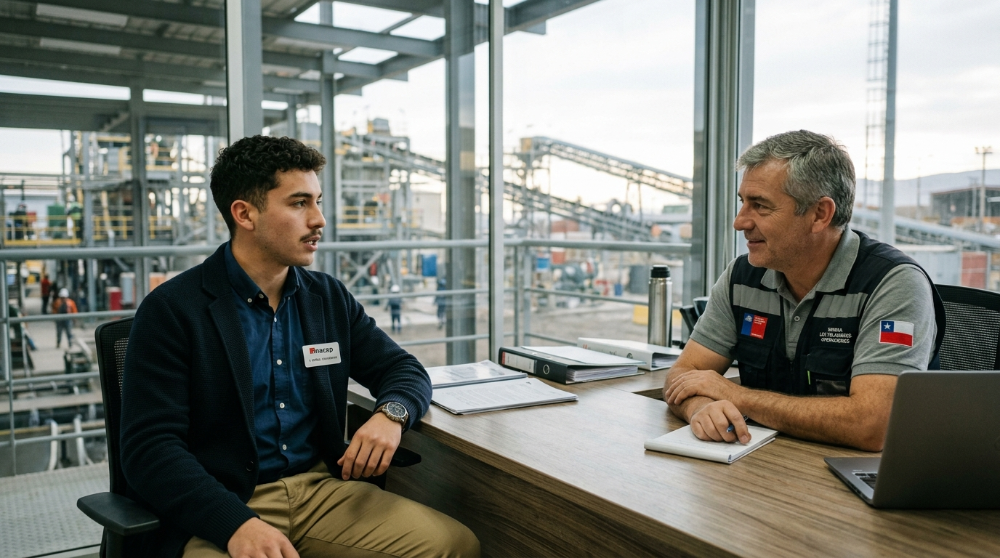
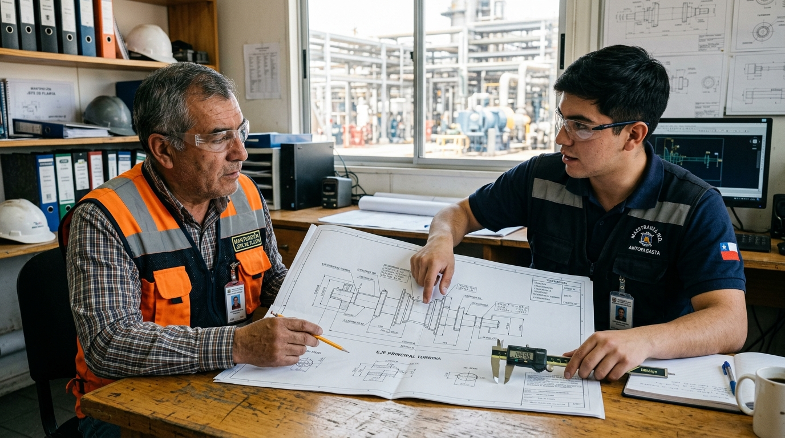
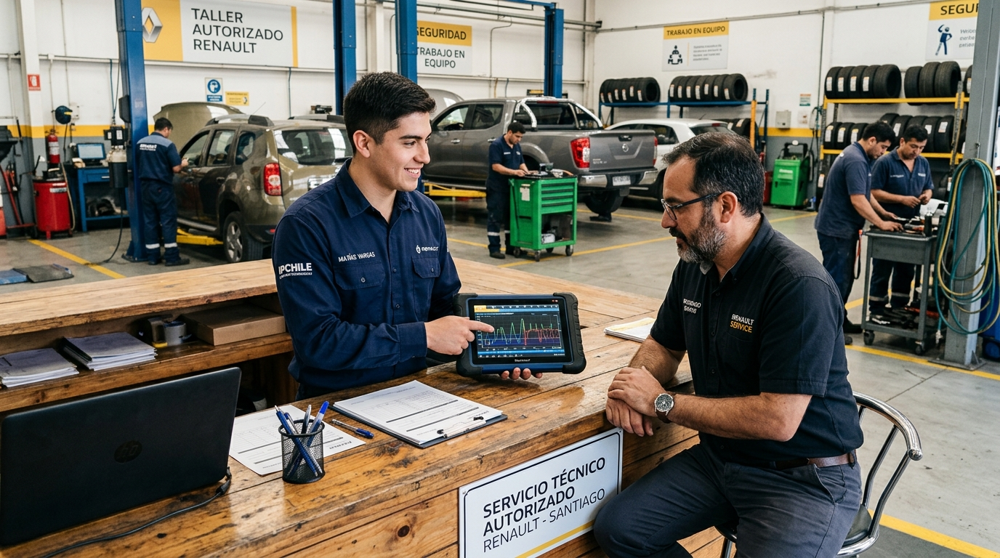
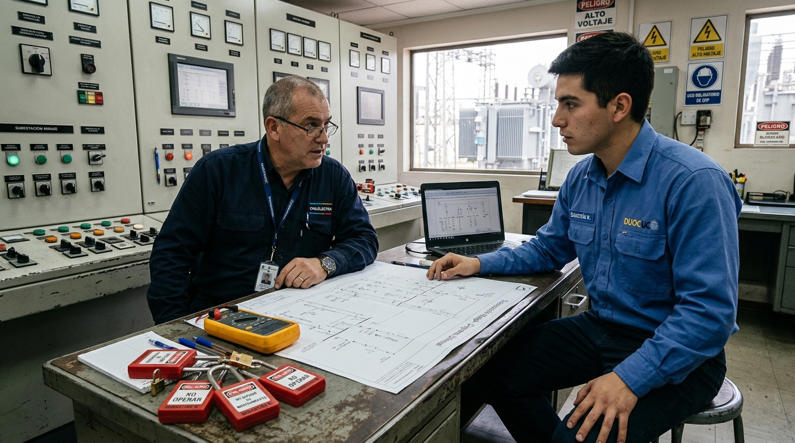
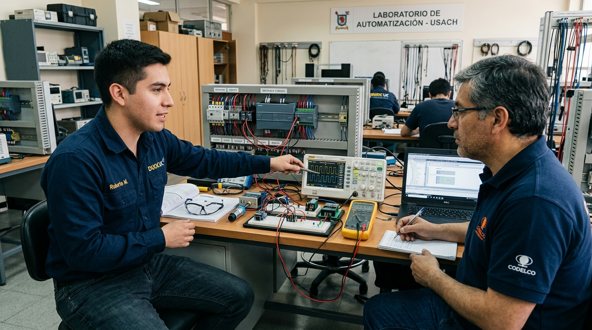

Relacionado con el cargo
La empresa puede preguntar por tu capacidad e idoneidad para realizar el trabajo.
- Formación, experiencia y habilidades.
- Certificaciones y disponibilidad.
- Cómo resolverías situaciones propias del cargo.
NM4 · Unidad 3 · Comunicación para el mundo laboral
Hoy prepararás una respuesta profesional a partir de una experiencia de taller y la escribirás en tu cuaderno antes de ensayarla.

Elige un número del 1 al 10 y explica brevemente por qué.
La empresa puede preguntar por tu capacidad e idoneidad para realizar el trabajo.
No puede discriminar usando datos ajenos a tu capacidad para el cargo.
✍️ Escribe el objetivo en tu cuaderno.
Abre el caso de tu especialidad y copia la pregunta de entrevista.
Ordena tus ideas en cuatro partes: situación, tarea, acción y resultado.
Redacta una respuesta completa de 8 a 10 líneas, con vocabulario técnico y una decisión segura.
Lee tu respuesta a un compañero y agrega una mejora a partir de su comentario.
Todo el producto queda en el cuaderno. El docente monitorea y orienta mientras trabajas.
Pregunta del entrevistador
«Cuéntame una situación en que resolviste un problema técnico».
Una buena respuesta no dice solo «lo arreglamos»: explica qué hiciste tú y cómo verificaste el resultado.
SSituación: En el taller, un equipo no encendía antes de comenzar una práctica.
TTarea: Debía identificar la falla sin omitir las medidas de seguridad.
AAcción: Desconecté la alimentación, revisé las conexiones con la pauta y medí continuidad con el instrumento correspondiente.
RResultado: Encontré un conductor suelto, lo corregí y comprobé el funcionamiento junto al docente.
Imágenes: Mixkit · toma de dos hombres en oficina, licencia de video libre. Guion original: Estudia CEST, 2026.
Entrevistador: Buenos días. Gracias por venir. Para comenzar, cuéntame quién eres y por qué te interesa este puesto.
Postulante: Buenos días. Egresé de una especialidad técnica y busco mi primera experiencia formal. En el taller aprendí a preparar herramientas, seguir pautas y registrar lo que se hizo. Me interesa este puesto porque combina trabajo práctico con aprendizaje junto a técnicos con más experiencia.
Entrevistador: Veo que aún no has tenido un contrato. ¿Qué experiencia concreta puedes aportar?
Postulante: Todavía no tengo experiencia laboral formal, pero en el taller revisé equipos con una pauta e identifiqué fallas sencillas. Cuando una tarea superaba mi preparación, pedía supervisión antes de intervenir. También aprendí a registrar lo realizado y a comprobar el resultado.
Entrevistador: ¿Qué te gustaría aprender durante los primeros meses?
Postulante: Quisiera conocer los equipos de esta empresa, sus procedimientos y la forma correcta de reportar una falla. Espero empezar con tareas acordes a mi nivel, recibir retroalimentación y asumir más responsabilidad cuando pueda demostrar que trabajo con seguridad.
Observa: el postulante reconoce su poca experiencia sin inventar antecedentes y menciona aportes verificables.
Entrevistador: Dame un ejemplo de un problema técnico que hayas ayudado a resolver. ¿Qué ocurrió y cuál fue el resultado?
Postulante: En una práctica, un equipo no encendía al comenzar el turno. Mi tarea fue revisar lo que estaba autorizado en la pauta. Primero aislamos la alimentación con el docente; después comprobé las conexiones y medí continuidad con el instrumento indicado. Encontré un conductor suelto. El docente supervisó la corrección y juntos verificamos que el equipo funcionara antes de usarlo.
Entrevistador: Cuando dices «encontramos», ¿qué hiciste tú exactamente?
Postulante: Seguí la pauta, revisé visualmente las conexiones, hice la medición autorizada y anoté el punto donde aparecía la interrupción. Avisé al docente y le mostré el registro. Él supervisó la corrección; yo no reconecté el equipo por mi cuenta.
Entrevistador: Si te piden intervenir una máquina que no conoces para ahorrar tiempo, ¿qué harías?
Postulante: Explicaría que primero necesito identificar riesgos, revisar el procedimiento de la empresa y pedir apoyo a quien esté autorizado. No pondría en marcha ni intervendría un equipo desconocido solo por cumplir el plazo. Propongo avanzar con tareas seguras mientras llega la persona responsable.
Busca la secuencia STAR en la primera respuesta: situación, tarea, acción propia y resultado comprobado. La repregunta exige precisión.
Entrevistador: Cuéntame un error que hayas cometido en el taller. ¿Cómo lo corregiste?
Postulante: Una vez anoté una medida en la casilla equivocada. Antes de entregar la pieza comparé el registro con la pauta y vi la diferencia. Avisé al docente, repetí la medición y corregí el registro. Desde entonces verifico el número de pieza y la unidad antes de dar un dato por terminado.
Entrevistador: ¿Qué haces si un compañero cree que la falla tiene otra causa?
Postulante: Le pido que explique qué observó y comparo su hipótesis con los síntomas y las mediciones disponibles. Si no hay evidencia suficiente, acordamos una prueba segura o consultamos a quien supervisa. Prefiero revisar los datos antes que discutir por quién tiene razón.
Entrevistador: Tenemos plazos exigentes. ¿Cómo reaccionarías si el trabajo está atrasado?
Postulante: Informaría qué falta, cuánto tiempo estimo y qué parte puedo adelantar sin omitir controles. Si el plazo ya no es realista, lo comunicaría a tiempo. Entregar algo sin verificar puede generar una falla mayor y hacer perder más tiempo.
Identifica una conducta concreta en cada respuesta: reconocer un error, contrastar evidencia y comunicar un retraso.
Entrevistador: ¿Por qué quieres trabajar aquí y no en otro lugar?
Postulante: Me interesó que el cargo incluya mantenimiento preventivo y trabajo con registros. Son tareas que quiero aprender bien. Revisé la descripción publicada del puesto; sé que todavía necesito capacitación en sus equipos, pero puedo aportar orden, disposición para preguntar y cuidado en los procedimientos.
Entrevistador: El puesto requiere turnos informados con anticipación. ¿Puedes cumplir ese horario?
Postulante: Sí, puedo cumplir el horario indicado en el aviso. Antes de aceptar quisiera confirmar cómo se organizan los turnos y a quién debo avisar si surge un imprevisto.
Entrevistador: Hemos terminado mis preguntas. ¿Hay algo que quieras preguntarnos?
Postulante: Sí. ¿Cómo es la inducción de seguridad para quienes recién ingresan? ¿Con quién trabajaría durante las primeras semanas y cómo recibiría retroalimentación?
Entrevistador: Habrá una inducción y trabajarás con una persona tutora. Te informaremos los próximos pasos esta semana. Gracias por venir.
Postulante: Gracias por explicarme el proceso y por su tiempo. Quedo atento a la respuesta. Que tenga buen día.
Ahora aplica el modelo a tu especialidad: responde con una experiencia propia, admite lo que aún no sabes y formula una pregunta pertinente al cargo.

Una pieza queda fuera de tolerancia y el turno está atrasado.

Una falla intermitente no entrega código y el cliente espera.

Existe presión para saltarse el bloqueo y etiquetado.

Una señal 4–20 mA falla y piden forzar el sistema.
En una práctica de mecanizado, una pieza queda fuera de tolerancia. El inserto de corte está desgastado y el turno va atrasado. Alguien propone entregarla igual para cumplir el plazo.
Un vehículo pierde potencia de forma intermitente, pero el escáner no registra un código permanente. El cliente está molesto y exige cambiar de inmediato una pieza costosa.
Una máquina debe volver rápido a producción. Un superior propone revisar el tablero sin completar el procedimiento de bloqueo y etiquetado porque «serán solo cinco minutos».
Un transmisor entrega valores fuera de rango y detiene la línea. El nivel físico parece normal, pero alguien propone forzar la variable en el SCADA para continuar mientras se revisa el sensor.
Plenario · 5 min
Dos estudiantes leen su respuesta. El curso escucha e identifica una fortaleza concreta en cada una.
Sistematización · 5 min
Revisión · 5 min